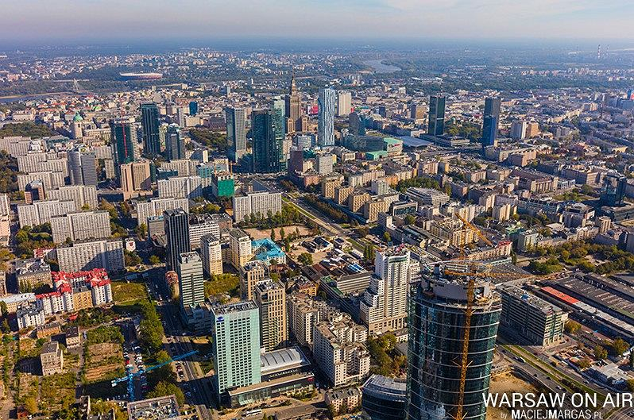
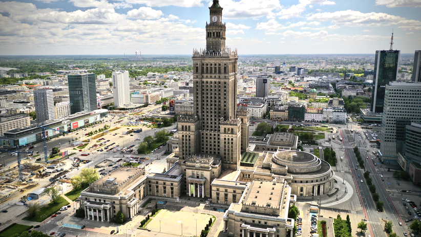

Warszawa to największe miasto w Polsce. Ludność wynosi 1,765mln(2017).Historia Warszawy sięga XII lub XIII wieku, kiedy to powstał historycznie najstarszy na terenie dawnej Warszawy dwór książąt mazowieckich Jazdów. Najstarszym ważnym ośrodkiem grodowym z X wieku wiązanym z włączeniem Mazowsza w skład Państwa Mieszka I jest Stare Bródno, z rejonu którego osadnictwo przeniosło się na brzeg Wisły. Na przestrzeni wieków miasto przeżywało lata świetności, lecz kilkakrotnie stawało też na skraju całkowitego zniszczenia, podczas najazdów szwedzkich, rosyjskich oraz niemieckich. Obecny charakter miasta w znacznej mierze związany jest ze zniszczeniami jakie przyniosła II wojna światowa, oraz procesem odbudowy.
Najciekawsze miejsca w tym mieście to Pałac kulturi i nauki, Zamek Królewski, Muzeum Powstania Warszawskiego.

